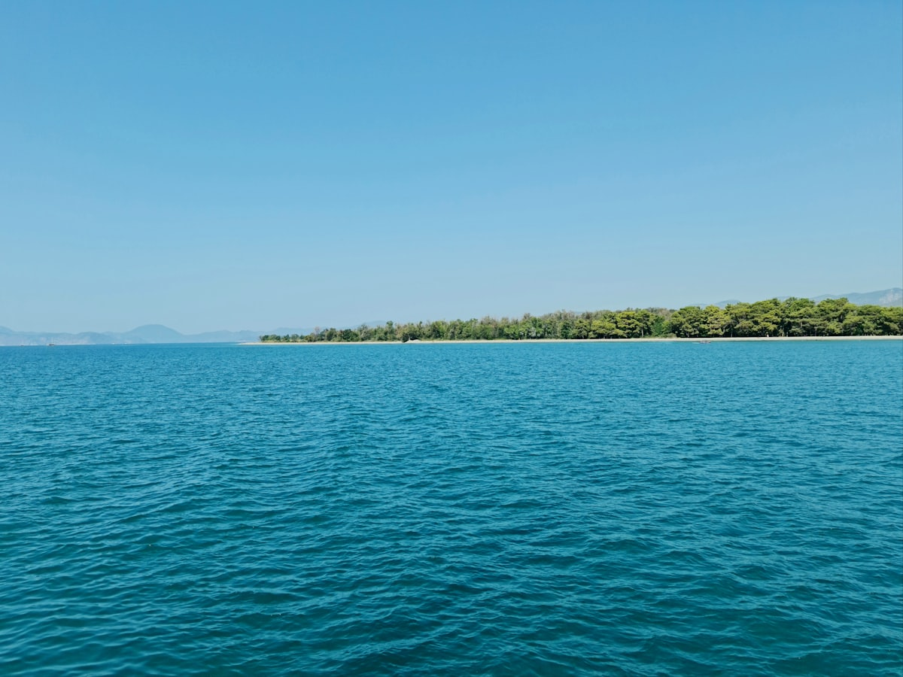
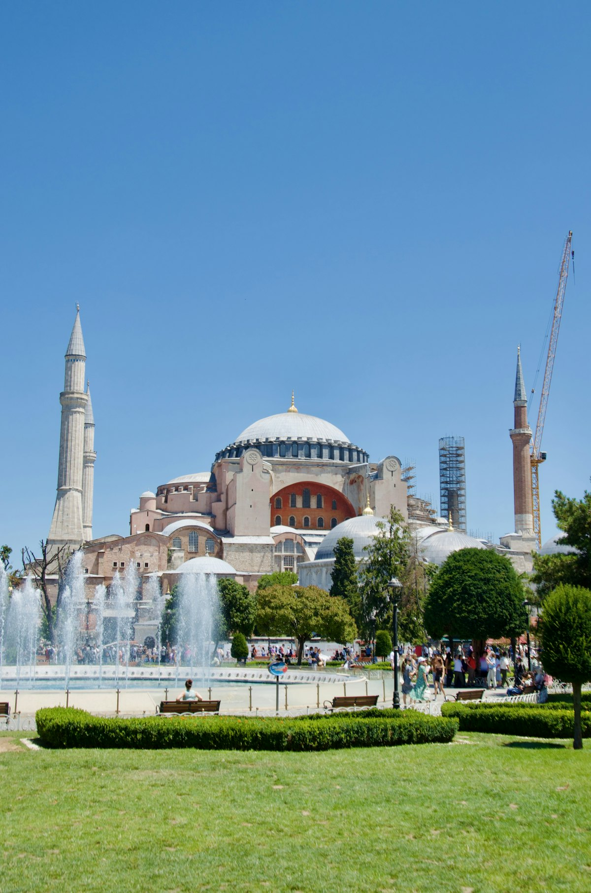
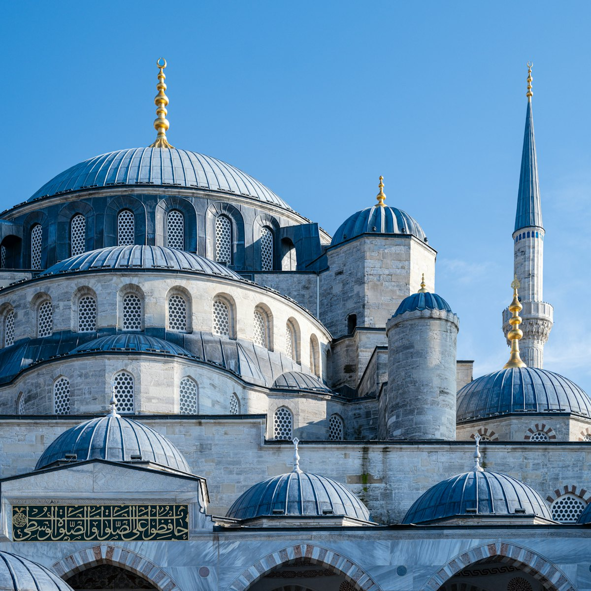
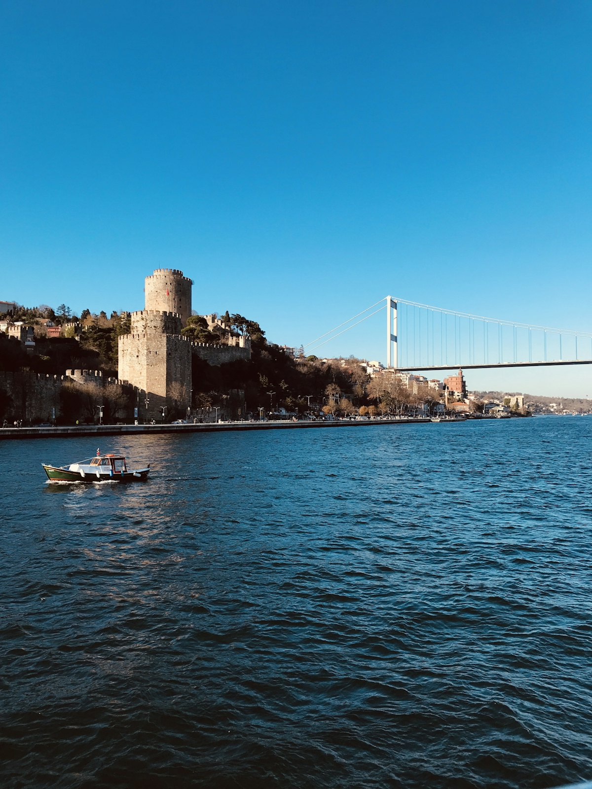
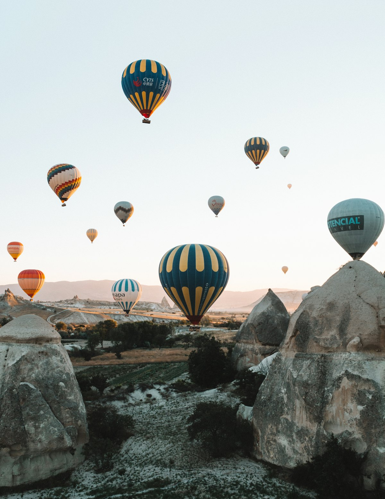
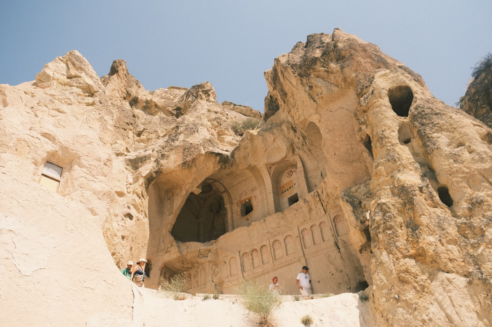
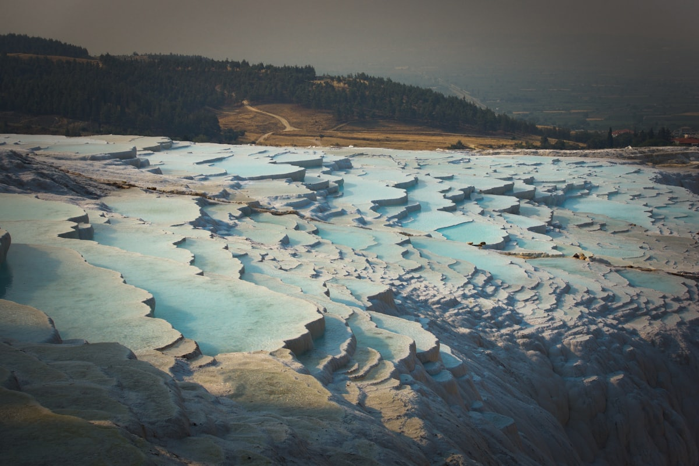
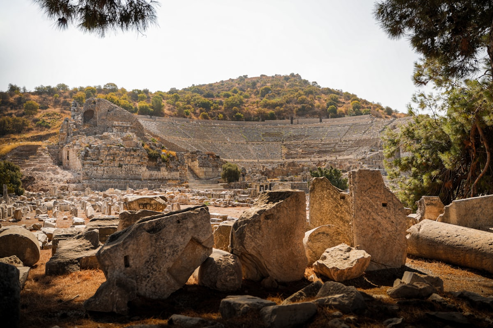

| 事项 | 结论 |
|---|---|
| 事项 | 结论 |
| 签证（最关键） | 中国公民办土耳其电子签 e-Visa：官网在线申请，单次入境停留 30 天，费用约 60 美元，一般 24 小时内出签，出签后打印随身携带 |
| 时差 | 比北京慢 5 小时（UTC+3），倒时差安排头两天晚睡晚起更从容 |
| 电源插座 | 220V，C/F 型插座（欧标两圆脚），需带转换插头，无需变压 |
| 货币 | 土耳其里拉（TRY），1 里拉 ≈ 0.2 元人民币；热气球等大额项目多按欧元计价 |
| 推荐方案 | 伊斯坦布尔 5 天 + 番红花城安卡拉 2 天 + 卡帕多奇亚 3 天 + 科尼亚棉花堡 2 天 + 以弗所 2 天 + 爱琴海地中海 4 天 + 返程 |
| 返程约束 | 伊斯坦布尔直飞北京约 10h；返程日留足机场时间，旺季提前 1 个月订票 |
| 行程链 | 伊斯坦布尔 → 番红花城 → 卡帕多奇亚 → 棉花堡 → 以弗所 → 费特希耶 → 返程 |
| 预算（人均） | 经济 14000–19000 ／ 标准 21000–28000 ／ 舒适 36000–50000（人民币） |
| 三件提前事 | ① 办电子签（24h 出签也要提前 1 周）② 订卡帕多奇亚热气球 ③ 订伊斯坦布尔—费特希耶机票 |
| 季节提醒 | 4–6 月、9–11 月春秋季最佳；7–8 月地中海酷热；12–2 月卡帕可看雪但热气球常取消 |
| 支付 | 里拉现金 + Visa/Master 卡；热气球等大额项目多按欧元计价 |
以下为 20 天 19 晚的推荐节奏：伊斯坦布尔 5 天打底，经安纳托利亚内陆（番红花城/安卡拉/卡帕多奇亚/科尼亚）南下，再沿爱琴海地中海海岸线收尾。每日主景点 ≤2 个，交通以长途大巴 + 包车 + 国内航班为主。
| 日期 | 行程 | 过夜地 | 主题 |
|---|---|---|---|
| D1 抵伊斯坦布尔 | 北京✈伊斯坦布尔（约 10h），入住老城区，傍晚圣索菲亚/蓝色清真寺夜景 | 伊斯坦布尔 | 抵达+预热 |
| D2 | 蓝色清真寺 → 圣索菲亚大教堂 → 地下水宫 → 香料市场 | 伊斯坦布尔 | 老城核心 |
| D3 | 托普卡帕宫 → 博斯普鲁斯海峡游船 → 加拉太塔日落 | 伊斯坦布尔 | 皇宫+海峡 |
| D4 | 大巴扎 → 独立大街 → 塔克西姆广场 → 加拉塔区 | 伊斯坦布尔 | 新城烟火 |
| D5 | 伊斯坦布尔→番红花城：奥斯曼古镇漫步、商队驿站 | 番红花城 | 古镇一日 |
| D6 | 番红花城→安卡拉：国父陵 → 安纳托利亚文明博物馆 | 安卡拉 | 首都中转 |
| D7 | 安卡拉→卡帕多奇亚：入住格雷梅洞穴酒店，日落观景台 | 卡帕多奇亚 | 飞地卡帕 |
| D8 | 热气球日出 → 格雷梅露天博物馆 → 乌奇希萨尔城堡 | 卡帕多奇亚 | 热气球日 |
| D9 | 爱情谷徒步 → 代林库尤地下城 → 精灵烟囱 | 卡帕多奇亚 | 奇特地貌 |
| D10 | 卡帕→科尼亚：梅夫拉那博物馆 → 老城漫步 | 科尼亚 | 旋转舞故乡 |
| D11 | 科尼亚→棉花堡：钙华池泡温泉日落 | 棉花堡 | 白色温泉 |
| D12 | 希拉波利斯古城 → 前往以弗所（塞尔丘克） | 以弗所 | 古城双日 |
| D13 | 以弗所古城：图书馆 → 大剧场 → 阿尔忒弥斯遗址 | 以弗所 | 罗马遗址 |
| D14 | 以弗所→博德鲁姆：城堡 → 港口漫步 → 爱琴海晚餐 | 博德鲁姆 | 爱琴海日 |
| D15 | 博德鲁姆→费特希耶：码头老城漫步 | 费特希耶 | 地中海日 |
| D16 | 厄吕代尼兹死海：沙滩游泳 → 滑翔伞（可选） | 费特希耶 | 死海日 |
| D17 | 十二岛游船：跳岛浮潜 | 费特希耶 | 跳岛日 |
| D18 | 费特希耶✈伊斯坦布尔：苏莱曼尼耶清真寺 → 巴拉特街区 | 伊斯坦布尔 | 重返伊城 |
| D19 | 自由日：王子群岛 / 博物馆 / 大巴扎购物补货 | 伊斯坦布尔 | 机动购物 |
| D20 返程 | 伊斯坦布尔✈北京（直飞约 10h），入境到家 | — | 收尾 |
以下为 20 天全程的逐小时执行时间线，可当作「当天打开照着走」的清单。标注 ※ 的可选项视体力与天气取舍。
| 时间 | 事项 |
|---|---|
| 07:00–13:30 | 北京✈伊斯坦布尔（直飞约 10h，比北京慢 5 小时）。落地伊斯坦布尔机场（IST） |
| 13:30–15:30 | 入境（出示电子签 e-Visa 打印件与返程机票），换少量里拉，买 Istanbulkart 交通卡 |
| 16:00–17:30 | 机场大巴/出租车到老城区（Sultanahmet），入住酒店休整 |
| 18:00–21:00 | 傍晚散步：圣索菲亚与蓝色清真寺亮灯夜景，苏丹艾哈迈德广场，晚餐土耳其烤肉 |
| 时间 | 事项 |
|---|---|
| 08:00–10:00 | 蓝色清真寺（免费）：六宣礼塔与 2 万片伊兹尼克蓝瓷砖，着装需遮肩遮膝 |
| 10:00–13:00 | 圣索菲亚大教堂（约 750 里拉）：拜占庭穹顶与马赛克，排队 30–60min，早到 |
| 13:00–14:00 | 午餐：苏丹艾哈迈德区烤肉店 |
| 14:30–16:30 | 地下水宫（约 350 里拉）：美杜莎石柱与光影，凉爽避暑 |
| 17:00–19:00 | 香料市场（埃及市场）（免费）：香料、软糖、土耳其茶铺，傍晚人少好逛 |
| 时间 | 事项 |
|---|---|
| 08:30–12:00 | 托普卡帕宫（约 750 里拉，含后宫另计）：奥斯曼苏丹宫殿，珍宝馆与御膳房，海景露台 |
| 12:00–13:00 | 午餐：皇宫附近或香料市场小吃 |
| 13:30–15:30 | 博斯普鲁斯海峡游船（约 250–500 里拉，约 1.5–2h 往返）：欧亚两岸、多尔玛巴赫切宫外观 |
| 16:00–18:00 | 加拉塔大桥漫步：桥上钓鱼人 + 烤鱼三明治 Balık Ekmek |
| 18:30–20:00 | 加拉太塔（约 650 里拉）：日落登顶俯瞰金角湾与老城，晚餐周边街区 |
| 时间 | 事项 |
|---|---|
| 09:00–12:00 | 大巴扎（免费）：世界最大室内市集，61 条巷子，地毯/灯具/陶瓷，砍价对半起 |
| 12:00–13:00 | 午餐：大巴扎周边烤肉或薄饼 |
| 13:30–17:00 | 独立大街 + 塔克西姆广场（免费）：复古有轨电车、甜品店、艺术街区 |
| 17:30–19:00 | 加拉塔区（免费）：老石楼小巷、观景咖啡馆、街头艺人 |
| 19:30 | 晚餐：土耳其海鲜或旋转舞演出（可选，约 300–500 里拉） |
| 时间 | 事项 |
|---|---|
| 08:00 | 伊斯坦布尔乘长途大巴/包车前往番红花城（约 6h，中途服务区休息） |
| 15:00–18:00 | 番红花城老城区（免费）：奥斯曼白墙木屋（Konak）与鹅卵石巷，世界遗产古镇 |
| 18:30–20:00 | 入住传统民宿 Konak，晚餐：当地家常菜与番红花茶 |
| 20:30 | 古镇夜游：灯笼照明的小巷，安静如童话 |
| 时间 | 事项 |
|---|---|
| 08:30–10:30 | 番红花城：Cinci Han 商队驿站（约 5 欧元参观）、钟楼、番红花集市晨逛 |
| 11:00–14:00 | 午餐后乘大巴前往安卡拉（约 3h） |
| 15:00–17:30 | 国父陵 Anıtkabir（免费）：土耳其国父凯末尔陵墓与卫兵换岗 |
| 18:00–19:30 | 安卡拉城堡区/老城漫步，晚餐：首都烤肉店 |
| 时间 | 事项 |
|---|---|
| 09:00–10:30 | 安纳托利亚文明博物馆（约 250 里拉）：石器到奥斯曼的文物走廊 |
| 11:00–15:00 | 午餐后乘大巴/包车前往卡帕多奇亚格雷梅（约 3.5h） |
| 15:00–17:00 | 入住格雷梅洞穴酒店，房间是凿岩而居的洞穴房 |
| 17:30–19:30 | 格雷梅日落观景台：俯瞰「仙人烟囱」与峡谷，预订次日热气球 |
| 时间 | 事项 |
|---|---|
| 05:00 | 热气球日出飞行（约 120–200 欧元/人，含酒店接送）：上百只气球升空，卡帕名片 |
| 07:30 | 回到酒店早餐，休息 |
| 09:30–12:30 | 格雷梅露天博物馆（约 450 里拉）：洞穴教堂与千年壁画（黑暗教堂另购票） |
| 13:00–14:00 | 午餐：格雷梅镇瓦罐牛肉 Testi Kebab |
| 14:30–17:00 | 乌奇希萨尔城堡（约 100 里拉）+ 鸽子谷（免费）：登顶看全景 |
| 19:00 | 格雷梅镇晚餐 + 夜观星（光污染少） |
| 时间 | 事项 |
|---|---|
| 08:00–11:00 | 爱情谷/玫瑰谷徒步（免费）：日出后光线最佳，或租 ATV 越野车（约 400–600 里拉/2h） |
| 11:30–12:30 | 午餐：格雷梅镇 |
| 13:00–16:00 | 代林库尤地下城（约 300 里拉）：8 层地下城市，通道低矮需低头；顺路看精灵烟囱 |
| 16:30–18:00 | 观景台日落 + 陶瓷/地毯手作店 |
| 19:00 | 晚餐：烤肉拼盘，品尝土耳其红茶收尾 |
| 时间 | 事项 |
|---|---|
| 09:00 | 格雷梅乘大巴前往科尼亚（约 3h） |
| 13:00–15:30 | 梅夫拉那博物馆（约 250 里拉）：旋转舞创始人鲁米陵墓，蓝色瓷砖穹顶 |
| 15:30–17:00 | 科尼亚老城漫步：阿兹兹清真寺、丝绸巴扎 |
| 18:00–19:30 | 晚餐：科尼亚特色烤肉 + 博兹（发酵谷物饮），宿科尼亚 |
| 时间 | 事项 |
|---|---|
| 09:00 | 科尼亚乘大巴前往棉花堡（约 4–5h） |
| 12:30–13:30 | 途中服务区午餐：土耳其烤肉卷/汤饭 |
| 15:00–18:00 | 棉花堡钙华池（约 700 里拉，含希拉波利斯）：赤脚入池，白色梯田 + 温泉 |
| 18:30 | 宿棉花堡温泉酒店，泡温泉缓解连日疲劳 |
| 时间 | 事项 |
|---|---|
| 08:30–11:00 | 希拉波利斯古城遗址（含在棉花堡门票内）：罗马剧场、古温泉池（可下水） |
| 11:30–13:00 | 午餐后乘大巴前往塞尔丘克（以弗所门户，约 2.5–3h） |
| 15:00–17:00 | 入住塞尔丘克小镇，逛周末市场/以弗所考古博物馆（若时间） |
| 18:00 | 晚餐：塞尔丘克烤肉，宿塞尔丘克 |
| 时间 | 事项 |
|---|---|
| 08:00–12:00 | 以弗所古城（约 750 里拉）：塞尔苏斯图书馆、大剧场、大理石大道，世界最大罗马古城之一 |
| 12:00–13:00 | 午餐：塞尔丘克镇 |
| 13:30–15:30 | 圣约翰教堂 + 阿尔忒弥斯神庙遗址（约 150 里拉）：古代世界七大奇迹之一只剩一根柱 |
| 16:00–18:00 | 以弗所考古博物馆（约 100 里拉）：阿尔忒弥斯雕像等精品 |
| 19:00 | 晚餐：爱琴海烤鱼，宿塞尔丘克/库萨达斯 |
| 时间 | 事项 |
|---|---|
| 09:00 | 塞尔丘克乘小巴/巴士前往博德鲁姆（约 2.5h，可途经库萨达斯） |
| 12:00–13:00 | 入住博德鲁姆海滨酒店，午餐：码头海鲜 |
| 13:30–17:00 | 博德鲁姆城堡（约 250 里拉）：圣彼得城堡与水下考古博物馆；港口帆船林立 |
| 18:30–21:00 | 爱琴海日落晚餐：烤鱼、章鱼、白葡萄酒，海滨漫步 |
| 时间 | 事项 |
|---|---|
| 09:00 | 博德鲁姆乘巴士/自驾沿爱琴海—地中海海岸线前往费特希耶（约 4h） |
| 14:00–15:00 | 入住费特希耶酒店 |
| 15:00–17:30 | 费特希耶老城 + 码头（免费）：地中海蓝湾、海滨步道、鱼市 |
| 18:30–20:00 | 晚餐：鱼市现选海鲜 + 土耳其披萨 Lahmacun |
| 时间 | 事项 |
|---|---|
| 09:00 | 到厄吕代尼兹（死海）（距费特希耶约 20min）：蓝绿宝石色的泻湖 |
| 10:00–12:00 | 死海沙滩游泳、躺椅发呆，水极清 |
| 12:00–13:00 | 午餐：海滩餐厅 |
| 13:00–16:00 | 滑翔伞（可选，约 700–1000 里拉含照片视频）：从巴巴达格山飞下，降落在海滩 |
| 18:00 | 返回费特希耶，晚餐自由安排 |
| 时间 | 事项 |
|---|---|
| 09:30 | 费特希耶码头登船：十二岛游船（约 400–600 里拉，含午餐与浮潜装备） |
| 10:00–16:00 | 跳岛：喀斯特小岛间停靠游泳、浮潜、甲板日光浴 |
| 17:00 | 返回码头，上岸休整 |
| 19:00 | 告别晚餐：费特希耶烤鱼 + 土耳其冰淇淋收尾 |
| 时间 | 事项 |
|---|---|
| 09:00 | 费特希耶✈伊斯坦布尔（经达拉曼机场约 1.5h）或大巴+转机 |
| 13:00–14:00 | 入住伊斯坦布尔，午餐 |
| 14:30–17:00 | 苏莱曼尼耶清真寺（免费）：山顶大寺，俯瞰金角湾最佳视角 |
| 17:30–19:30 | 巴拉特街区（免费）：彩色房子、复古咖啡馆、爬坡小巷 |
| 20:00 | 晚餐：伊斯坦布尔风味收官 |
| 时间 | 事项 |
|---|---|
| 09:00–12:00 | 自由安排：王子群岛马车环岛 / 纯真博物馆 / 卡迪柯伊市场 |
| 12:00–13:00 | 午餐：市场小吃 |
| 13:30–17:00 | 大巴扎/香料市场补货：茶叶、软糖、地毯、彩灯、手工皂 |
| 18:30–20:30 | 博斯普鲁斯夜景告别晚餐，打包行李 |
| 时间 | 事项 |
|---|---|
| 08:00–10:00 | 退房，乘机场大巴/出租车到伊斯坦布尔机场（IST） |
| 10:00–12:00 | 办理值机、退税与安检，机场内免税店最后补货 |
| 13:00–23:00 | 伊斯坦布尔✈北京（直飞约 10h），机上休息 |
| 23:30 | 入境到家，行程结束 |
必去（必去）/ 顺路（顺路）/ 可跳过（可跳过）。

必去
必去
顺路
必去
必去
必去
必去图片为 Unsplash 主题图（圣索菲亚、蓝色清真寺、博斯普鲁斯、卡帕多奇亚热气球、格雷梅洞穴教堂、棉花堡、以弗所、费特希耶海滩等均为土耳其实景），用于页面配图。更多免费/低成本景点：地下水宫、大巴扎、苏莱曼尼耶清真寺、格雷梅日落观景台、鸽子谷、费特希耶老城。
点击左侧节点可在地图上定位；点击地图 marker 会高亮对应节点。坐标为 WGS-84 转 GCJ-02 纠偏后标注。
以下为单人、不含购物的估算，人民币计价；出发地基准北京。汇率按 1 土耳其里拉 ≈ 0.2 元人民币估算，里拉汇率波动大；热气球等按欧元计价项目已折算人民币。往返机票按淡季直飞 4500–6000 元计。
| 项目 | 经济（14000–19000） | 标准（21000–28000） | 舒适（36000–50000） |
|---|---|---|---|
| 往返机票 | 北京⇄伊斯坦布尔 4500–5500 | 直飞往返 5500–7000 | 直飞+升舱 10000–15000 |
| 住宿（19 晚） | 青旅/民宿 250–400/晚 | 三星/特色民宿 450–800/晚 | 洞穴酒店/海滨度假 1200–2500/晚 |
| 境内交通 | 长途大巴+小巴 1500–2200 | 大巴+2 段机票+包车 3000–4500 | 全段包车/租车 8000–12000 |
| 门票与体验 | 基础景点约 800–1200 | 含热气球约 2500–3500 | 热气球+滑翔伞+全遗址 5000–7000 |
| 餐饮（20 天） | 烤肉+街头 3000–4000 | 正常下馆子 4500–6500 | 海鲜大餐+景观餐厅 10000–15000 |
带娃推荐：伊斯坦布尔留 6 天（圣索菲亚+地下水宫+渡轮+海洋馆），卡帕只玩格雷梅露天博物馆与 ATV（不适合小童），砍科尼亚；棉花堡对娃新奇但池边滑，全程看护。热气球 6 岁以下不建议，改乘格雷梅观景台看气球升空。长途大巴改为包车/自驾更灵活，两段间至少留半天缓冲。
卡帕多奇亚冬季可看「雪中仙人烟囱」，但热气球取消率高（备 3 个清晨机动）；地中海段冬季海风大，费特希耶滑翔伞与跳岛停运，可砍掉换成伊斯坦布尔深度 + 布尔萨滑雪。冬季酒店与机票便宜 30–50%，里拉购汇成本也更低。
| 方式 | 时长 | 参考价 | 备注 |
|---|---|---|---|
| 直飞（推荐） | 北京→伊斯坦布尔约 10h | 往返 4500–7000 元 | 土耳其航空/国航，落地伊斯坦布尔机场（IST） |
| 转机 | 13–18h | 3500–5500 元 | 经莫斯科/迪拜/多哈，便宜但费时 |
| 国内航线 | 费特希耶—伊斯坦布尔约 1.5h | 单程 400–800 元 | 达拉曼机场出发，班次少需早订 |
| 区域 | 价格/晚 | 优点 | 短板 |
|---|---|---|---|
| 伊斯坦布尔·老城苏丹艾哈迈德 | 经济 300–500 / 标准 500–900 | 景点步行可达，氛围浓 | 坡多，旺季贵 |
| 伊斯坦布尔·贝伊奥卢/加拉塔 | 标准 500–1000 | 夜生活+海峡景 | 离老城远一程 |
| 番红花城·古镇民宿 Konak | 300–600 | 奥斯曼木屋体验 | 设施古旧 |
| 卡帕多奇亚·格雷梅洞穴酒店 | 600–1500（含早） | 洞穴房+露台观热气球 | 潮湿，隔音一般 |
| 棉花堡·温泉酒店 | 400–800 | 泡温泉便利 | 可选少 |
| 塞尔丘克/库萨达斯 | 经济 300–500 | 以弗所近，安静 | 夜晚选择少 |
| 博德鲁姆/费特希耶海滨 | 标准 500–1200 | 地中海度假 | 旺季一房难求 |